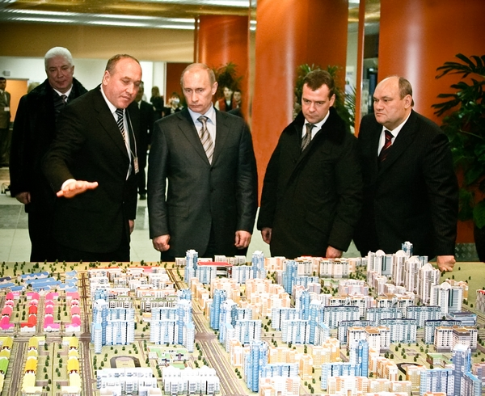
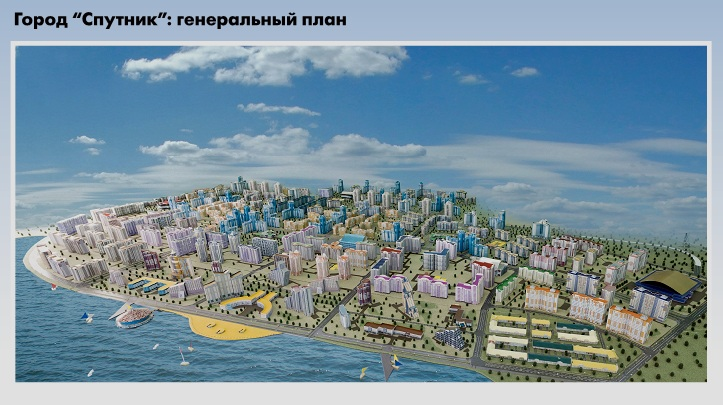
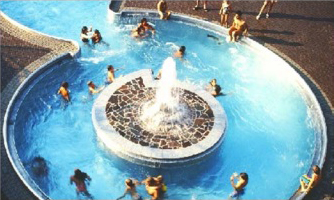
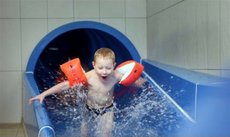
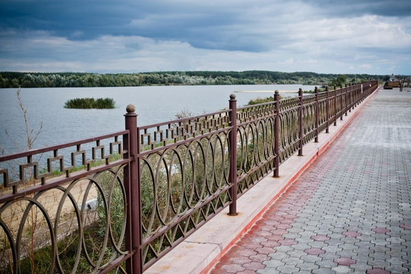

О Спутнике
Строительный холдинг «Термодом» реализует крупнейший в регионе инвестиционный проект по строительству в г. Пенза современного жилого микрорайона - город «Спутник»- с населением более 100000 человек, 1 885 000 кв. м жилья, полностью обеспеченного всей инженерной, коммунальной и социальной инфраструктурой.
Проект прошел конкурсный отбор в правительстве Российской Федерации в 2007 г., вошел в число 22 лучших проектов комплексного освоения территорий и был представлен В.В. Путину и Д.А. Медведеву во время их совместного визита в г. Пенза и получил высокую оценку со стороны руководителей государства.
Микрорайон жилой застройки города «Спутник» расположен в юго-западной части г. Пенза. Часть территории застройки плавно вливается в городскую черту и граничит с многоэтажным жилым районом «Терновка», застроенным 5-ти, 9-ти этажными домами с сохранившейся одноэтажной застройкой. Транспортно-планировочная структура застраиваемого района продиктована существующей улично-дорожной сетью района «Терновка» и органически связана с ней.
На территории застройки построен крупный торговый центр «METRO C&C», который пользуется популярностью у жителей города и области.
До центра города можно доехать за 10-15 минут.
Уже введено более 50 000 кв. м жилья, проложены основные коммуникации (водопровод, газопровод и т.д.), сеть автодорог, построены и работают собственная импортная котельная, ЦТП, распределительная подстанция, КНС. Для снабжения населения чистой питьевой водой бурятся артезианские скважины глубиной до 350 м.
Комплексная застройка предполагает создание городка, где помимо малоэтажных и многоэтажных жилых домов создаются объекты социально- бытовой и инженерной инфраструктуры, транспортная инфраструктура, гаражные комплексы, автостоянки, школы, детские сады, торговые комплексы, предприятия питания, спортивные сооружения, развлекательные центры, производится благоустройство дворовых пространств с созданием ландшафтной инфраструктуры и т.д.
Для взрослого населения и игр детей предусмотрены площадки, оборудованные малыми формами. В удобных местах размещены площадки для чистки домашних вещей, сушки белья, для мусоросборников, связанные между собой асфальтовыми дорожками. Территория максимально озеленена.
Особое внимание уделяется условиям проживания людей с ограниченными возможностями. От специальных устройств в домах (пандусы, подъемники и т.п.) и планировок квартир до дорожек без препятствий, с возможностью свободного проезда, пандусов для спуска к воде, где можно активно заниматься рыбной ловлей и просто отдыхать.
Архитектурный ансамбль центра формируется от начала главного бульвара, где располагаются здания культурно – развлекательного и торгового центра и выходит на набережную – пешеходную улицу на береговой полосе чистейшего искусственного озера. Здесь разместится сеть ресторанов, кафе и других зданий бытового и социального обслуживания. Изюминкой микрорайона станут ЯХТ-КЛУБ и АКВАПАРК, спроектированные и построенные по самым современным технологиям.
 Для хранения автомобилей предусмотрены многоэтажные гаражи. Применение многоэтажных гаражей обусловлено высокой плотностью застройки, что повышает уровень автомобилизации. Планировочное решение микрорайона предусматривает трассировку кратчайших пешеходных путей между жилой зоной и гаражами.
Набережная замыкает главную аллею района – широкий бульвар, соединяющий набережную с магистральной улицей. Широкие полосы газона, расположенные с обеих сторон бульвара четко выделяют ширину и подчеркивают его прямолинейность. Бульвар – пешеходная зона района. Наличие малых архитектурных форм, зелени газонов, цветочных бордюров сделают бульвар местом отдыха жителей.
Крытый 3-х этажный бассейн, расположенный в центре мини – города, предназначен для учебно-тренировочных занятий и спорта, проведения соревнований в присутствии зрителей (наличие трибун) и активного отдыха.
Для проведения свободного времени у жителей микрорайона есть масса возможностей: летняя и зимняя рыбалка, беговые и велосипедные дорожки, обустроенный пляж на берегу искусственного озера и многое другое.
Учитывая особенности климатической зоны и месторасположение комплекса, можно с уверенность утверждать, что это идеальное место для всех тех, кто хочет жить в экологически чистом, развитом регионе средней полосы России в новом современном микрорайоне.